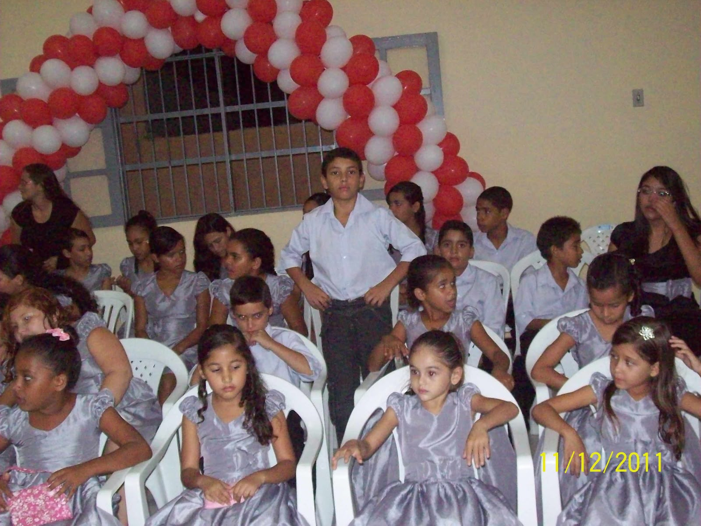
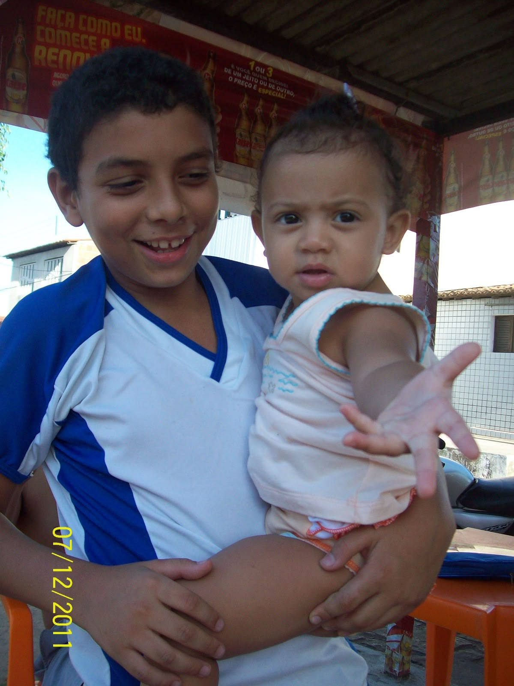
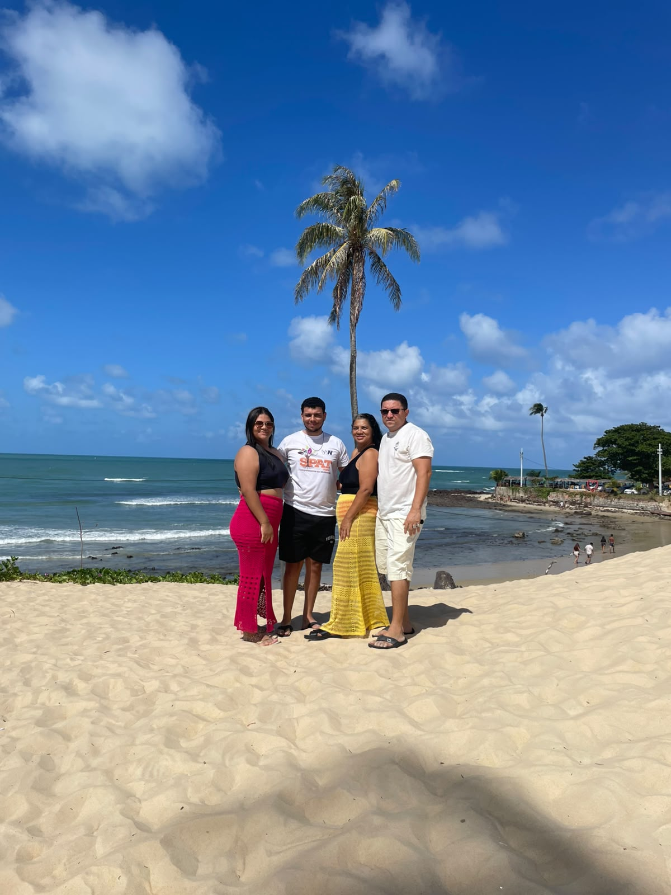
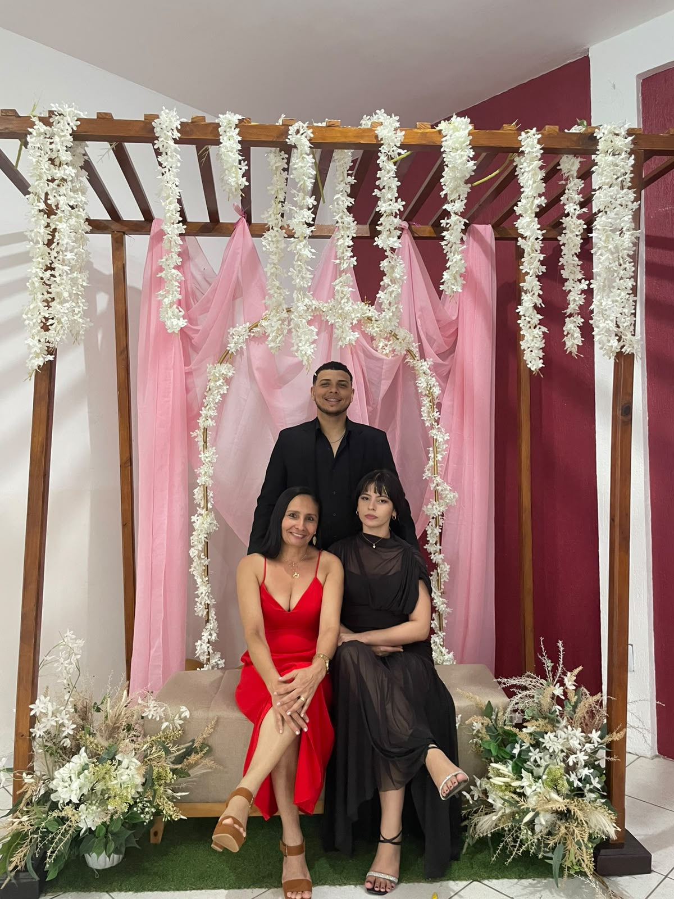
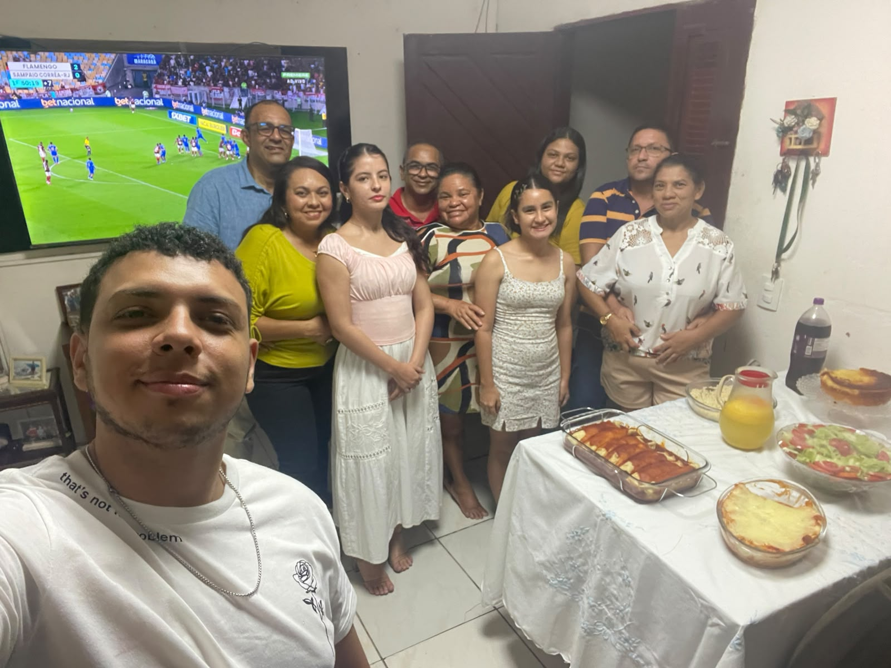

☂ UMBRELLA CORPORATION
SISTEMA CENTRAL DE ARQUIVOS
BANCO DE DADOS BIOLÓGICOS
ARQUIVO Nº: UMB-07082001
NOME DO AGENTE: DEYVIDE ROCHA
CODINOME: AGENTE ALFA-088
DATA DE NASCIMENTO: 07/08/2001
IDADE: 25 ANOS
CLASSIFICAÇÃO: ULTRA CONFIDENCIAL
STATUS: ATIVO
NÍVEL DE ACESSO: AUTORIZADO
RELATÓRIO DA INVESTIGAÇÃO
Durante anos, a Umbrella Corporation manteve sob observação um indivíduo considerado de interesse especial.
A investigação acompanhou diferentes fases de sua vida, registrando acontecimentos, mudanças e características que contribuíram para sua trajetória.
Os arquivos abaixo foram organizados em ordem cronológica e representam as principais evidências coletadas pelos investigadores.
Todo o conteúdo permanece classificado.

EVIDÊNCIA N° 001
primeiro resgistro do agente.
os investigadores identificaram uma fase inicial marcada por descobertas, curiosidade e os primeiros momentos de uma longa trajetória.

EVIDÊNCIA N° 002
Registro Familiar — Evidência de uma Conexão Única.
Antes de qualquer conquista, existem pessoas que fazem parte da nossa história desde o começo. Uma irmã é uma dessas presenças: alguém que compartilha lembranças, fases da vida e momentos que nunca serão esquecidos.

EVIDÊNCIA N° 003
Registro Especial — Unidade Familiar.
Durante a investigação, uma das evidências mais importantes foi encontrada: a presença daqueles que estiveram ao lado do agente em cada fase da sua jornada.

EVIDÊNCIA N° 004
Arquivo Confidencial — Família Expandida.
Algumas pessoas chegam ao longo da jornada e se tornam parte da nossa história. Este registro apresenta a formação de novos laços, construídos através de carinho, respeito e momentos compartilhados.

EVIDÊNCIA N° 005
Registro Especial — Conexões Familiares.
A investigação revelou que a história de um agente não é construída apenas por suas próprias escolhas, mas também pelas pessoas que caminham ao seu lado.

EVIDÊNCIA N° 006
Registro Especial — Origem do Agente.
Antes de qualquer missão, existe uma origem. Entre as primeiras e mais importantes evidências encontradas estão aqueles que fizeram parte da construção desta história desde o início.
Pais e irmã representam os primeiros capítulos dessa jornada: os momentos compartilhados, os ensinamentos recebidos e os laços que permanecem presentes em cada nova fase da vida do agente.

EVIDÊNCIA N° 007
Registro Especial — Aliança Confirmada.
Durante a investigação, uma nova evidência foi identificada: a presença de alguém que passou a fazer parte da jornada do agente.
Ao longo do caminho, essa conexão se tornou sinônimo de companheirismo, apoio e momentos compartilhados. Uma nova página foi adicionada ao arquivo, mostrando que algumas missões são melhores quando realizadas ao lado de alguém especial.

EVIDÊNCIA N° 008
Arquivo Infantil — Fase de Treinamento Inicial.
Antes das grandes missões, existiram os primeiros desafios. Entre jogos, descobertas e amizades, este agente começava a desenvolver as características que fariam parte da sua trajetória.

EVIDÊNCIA N° 009
Arquivo Visual — Perfil Confirmado.
Evidência registrada: a essência do agente permanece intacta. Um pequeno retrato de uma grande história que ainda estava apenas começando.

EVIDÊNCIA N° 010
Arquivo Infantil — Estado Emocional: Positivo.
Este registro mostra uma fase em que as maiores missões eram brincar, descobrir o mundo e criar memórias que permaneceriam guardadas para sempre.

EVIDÊNCIA N° 011
Arquivo Infantil - Sinal de Personalidade Confirmado.
As evidências continuam revelando detalhes importantes sobre o agente. Neste registro, observa-se uma característica que permanece ao longo dos anos: a capacidade de transformar momentos simples em memórias especiais.

EVIDÊNCIA N° 012
Registro Especial — Aliança de Família.
Durante a investigação, foi identificada uma conexão especial dentro dos arquivos familiares.
Mais do que um simples parentesco, este registro apresenta uma parceria construída através de momentos compartilhados, brincadeiras, histórias e memórias que permanecem ao longo dos anos.

EVIDÊNCIA N° 013
Desenvolvimento do Agente.
Novo registro adicionado ao arquivo. Esta evidência apresenta uma fase importante da trajetória do agente, revelando sua personalidade, seus traços únicos e o caminho que começava a ser construído.
Cada detalhe deste momento representa uma parte da história que o trouxe até aqui.

EVIDÊNCIA N° 014
Evolução do Agente.
Mais uma evidência adicionada ao arquivo. Este registro captura um momento único da trajetória do agente, revelando detalhes de sua personalidade e da fase em que novas experiências começavam a fazer parte da sua história.

EVIDÊNCIA N° 015
Identidade Confirmada.
Entre os arquivos recuperados, encontra-se mais um registro do agente em sua trajetória.
Uma imagem que preserva não apenas sua aparência naquele momento, mas também uma fase, uma personalidade e uma parte da história que continua sendo construída.

EVIDÊNCIA N° 016
Evidência Coletada.
Este registro apresenta mais um capítulo da vida do agente.

EVIDÊNCIA N° 017
Presença Registrada.
Uma nova evidência foi adicionada ao relatório.

EVIDÊNCIA N° 018
egistro Especial — Vínculo Confirmado.
Entre os arquivos analisados, uma evidência permanece clara: algumas conexões são construídas desde os primeiros capítulos da vida.

EVIDÊNCIA N° 019
Registro Especial — Primeira Unidade de Apoio.
Entre os primeiros arquivos recuperados, encontra-se uma das evidências mais importantes da trajetória do agente: a presença de quem esteve ao seu lado desde o início.

EVIDÊNCIA N° 020
Arquivo Confidencial — Unidade de Apoio Identificada.
Durante a investigação, foi localizada uma das presenças mais antigas na história do agente.
Uma companheira de jornada desde os primeiros registros, compartilhando momentos, aprendizados e lembranças que fazem parte deste arquivo.

EVIDÊNCIA N° 021
Operação: Primeiros Sorrisos.
Entre os arquivos recuperados, foi encontrada uma evidência de uma das fases mais marcantes do agente: o período em que a missão principal era espalhar alegria.

EVIDÊNCIA N° 022
Registro Especial — Núcleo Familiar Inicial.
Entre os arquivos mais importantes da investigação, encontra-se o registro daqueles que estiveram presentes desde os primeiros capítulos da vida do agente.
A presença da mãe e da irmã representa uma parte essencial dessa trajetória, marcada por cuidado, companheirismo e memórias construídas ao longo dos anos.

EVIDÊNCIA N° 023
Arquivo Atual — Status Confirmado.
Análise concluída: agente identificado na fase atual da missão.
Uma nova etapa registrada, carregando consigo todas as experiências, aprendizados e memórias que formaram quem ele é hoje.

EVIDÊNCIA N° 024
Registro Final — Laços Permanecem.
Após a análise de todos os arquivos, uma evidência se mantém constante: a importância daqueles que fizeram parte da jornada desde o início.
A mãe e a irmã representam alguns dos primeiros e mais importantes registros desta história, presentes nas memórias, nos desafios e nas conquistas que ajudaram a formar o agente que existe hoje.
Arquivo concluído: origem, trajetória e laços preservados.
RELATÓRIO FINAL
Após a análise completa dos registros, conclui-se que este arquivo representa muito mais do que simples evidências fotográficas.
Cada documento preserva momentos importantes de uma vida construída com dedicação, amizades, desafios, conquistas e inúmeras lembranças.
O indivíduo registrado nas primeiras páginas deste relatório tornou-se uma pessoa que continua escrevendo sua própria história, enfrentando cada missão com coragem e determinação.
Embora esta investigação seja oficialmente encerrada hoje, acredita-se que os capítulos mais importantes ainda estão por vir.
A Umbrella Corporation agradece pelos serviços prestados e deseja que esta nova missão seja repleta de saúde, felicidade, sucesso e pessoas especiais ao seu lado.
PARABÉNS PELOS SEUS 25 ANOS, AGENTE.
MISSÃO CONCLUÍDA.